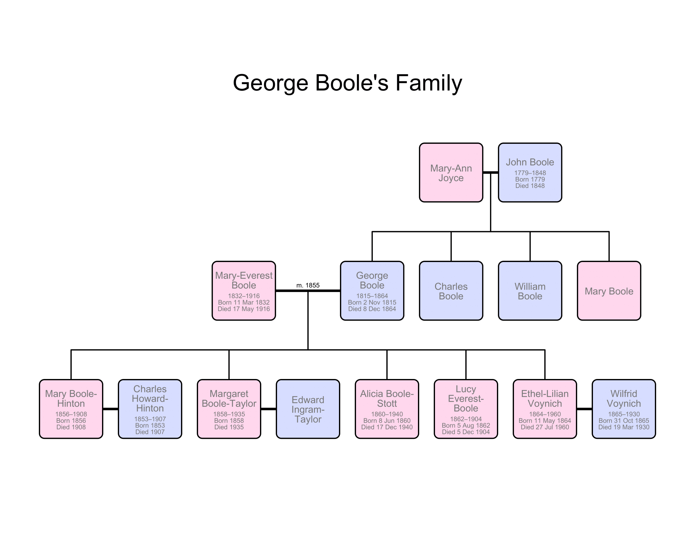

Enfance et passion précoce pour les mathématiques
George Boole, né le 2 novembre 1815 à Lincoln, au Royaume-Uni, a grandi dans une famille modeste. Passionné par les mathématiques, la science, et la littérature dès son enfance, il a dû interrompre ses études à 16 ans pour soutenir financièrement sa famille. Malgré cela, il trouve un équilibre en travaillant comme professeur assistant tout en poursuivant ses études de manière autodidacte.
Début de carrière
Boole ouvre sa propre école à Lincoln, où il enseigne les mathématiques en mettant l'accent sur leur application pratique. Il consacre également beaucoup de temps à l'Institut de Mécanique, où il donne des cours bénévoles et développe sa réputation locale. Ses premières publications mathématiques, influencées par ses lectures et les conseils d'Edward Ffrench Bromhead, portent sur le calcul des variations et la théorie des invariants algébriques.
Articles de George Boole
En 1844, Boole attire l'attention de la Royal Society avec un article publié dans les Philosophical Transactions, établissant ainsi les bases de ses futurs travaux en logique. Il publie ensuite "Mathematical Analysis of Logic" en 1847 et "An Investigation Into the Laws of Thought, on Which are Founded the Mathematical Theories of Logic and Probabilities" en 1854.
Professeur à Cork
En 1849, Boole obtient un poste de professeur de mathématiques au Queen's College de Cork, en Irlande. Malgré des conditions de vie difficiles et des controverses politico-religieuses, il continue ses recherches en mathématiques, notamment sur les équations différentielles.
Mariage, Famille et Fin de Vie
George Boole se marie avec Mary Everest en 1855, avec qui il a cinq filles. Il décède le 8 décembre 1864 des suites d'une pleuropneumonie. Sa contribution à la logique mathématique et à la théorie des probabilités a eu un impact durable, et son héritage se perpétue à travers ses travaux et l'influence qu'il a exercée sur d'autres mathématiciens.
